| 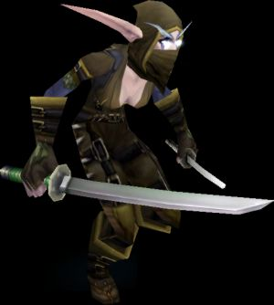 |
Безусловно, разбойник (Rogue) — один из самых интересных классов в World of Warcraft. Возможности скрываться от других игроков и наносить высокие повреждения открывают огромные перспективы. Впрочем, если вы не привыкли бить со спины, вам все равно найдется что предложить врагу. Разнообразный набор ударов и способностей позволяют разбойникам сравниться с магами по уровню наносимых повреждений. Также благодаря высокой ловкости разбойники имеют увеличенный шанс нанести критический удар и увернуться от удара противника, что компенсирует отсутствие возможности носить тяжелую броню. В дополнение к этому разбойники имеют навыки парирования, что позволяет им еще больше избегать урона.
В партии разбойнику найдется множество разнообразной работы. Вы можете взять на себя разные роли: выманивать монстров, наносить им большие повреждения или «выключать» их из боя. Также разбойники могут открывать запертые сундуки и двери, что поможет вам и вашей партии в добыче всяких вкусностей.
Механика
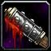Существует множество вариантов развития разбойника. Вы можете сделать его мастером владения кинжалами и обрушивать на противника шквал ударов, а можете вручить ему пару дубин, оглушая ими своих противников. Стратегии боя за разбойника разнообразны, но чаще всего они сводятся к нанесению как можно большего вреда противнику.
Основной особенностью механики боя разбойника являются комбо-очки (combo points), которые можно набирать с помощью комбо-ударов (combo moves) и тратить на завершающие удары (finishing moves). Всего можно накопить до 5 комбо-очков. Причем, чем больше накоплено комбо-очков, тем сильнее будет завершающий удар. Они отображаются вокруг портрета противника в виде пузырьков, которые наполняются красным.
Комбо-очки привязаны к цели и нельзя заработать их на одном противнике, а потратить на другом. Также если вы убежите от противника, а потом вернетесь к нему, то вы потеряете все набранные комбо-очки.
Важно то, что все способности используют энергию, которая у разбойника вместо маны. Изначально все разбойники имеют 100 единиц энергии, таланты позволяют поднять это значение еще на 10 единиц. Каждые 2 секунды происходит восстановление 20 единиц энергии. Энергия имеет мало общего с маной, это просто средство ограничить и без того сильных разбойников от слишком частого использования способностей. При необходимости запас энергии можно моментально восполнить с помощью специального напитка Thistle Tea или увеличить скорость ее регенерации с помощью талантов.
Способности
Способности разбойника делятся на несколько типов:
Комбо-удары
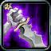Удары, наносящие противнику
дополнительные повреждения и дающие комбо-очки. Многие из них
имеют дополнительные эффекты, такие как оглушение (stun) или
увеличение шанса увернуться от вражеской атаки.
Завершающие удары
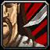Удары, эффект которых зависит
от количества затраченных на них комбо-очков.
Скрытность
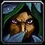Скрытность (Stealth) является
уникальной способностью разбойника и позволяет ему стать
невидимым для врагов. Использовать ее можно только вне боя.
Скорость разбойника в скрытом состоянии меньше обычного, но
она растет с повышением ранга способности до 70%, а с помощью
талантов ее можно поднять еще на 15%. Помимо того, что
разбойник невидим, ему еще доступны специальные мощные удары
из этого состояния (например, Ambush).
Чем больше уровень персонажа, тем больше его способность засечь разбойника в скрытом состоянии. Также уровень детекта можно повысить с помощью специальных вещей. В свою очередь, разбойник тоже может повысить свой навык скрытности с помощью талантов.
Исчезновение
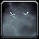Изчезновение (Vanish) позволяет
разбойнику скрыться во время боя. Для этого нужен специальный
реагент Flash Powder. Кроме этого, у этой способности кулдаун
намного выше, чем у скрытности.
Яды
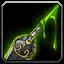Уникальный навык разбойника, который
аналогичен профессиям, но доступен только этому классу. Навык
приготовления ядов (Poisons) позволяет отравлять свое оружие,
увеличивая наносимые повреждения, а также добавляя ему
полезные эффекты. Например, можно замедлить скорость
произнесения магом заклинаний или уменьшить эффективность
лечения.
Взлом замков
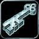Еще один уникальный навык разбойника
позволяет взламывать замки на контейнерах и дверях. Хотя в
игре есть и другие способы открывать замки, взлом замков
(Lockpicking) разбойника является самым удобным и простым в
использовании.
Базовая стратегия игры
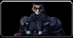Бой с противником как в соло, так и в группе обычно начинается из скрытого состояния (Stealth). Разбойнику доступны два варианта: нанести противнику огромные повреждения ударом Ambush или отправить противника в стан с помощью Cheap Shot. Кроме этого, можно «усыпить» его с помощью Sap, если это гуманоид — обычно это полезно в бою против нескольких противников для выключения одного из них на время.
Можно начать бой и «пуллом» противника с помощью метательного ножа, но это оправдано только в случае вытягивания противника на свободное место (что обычно можно сделать и с помощью удара в ближнем бою из скрытого состояния и последующим отступлением на свободное от дополнительных мобов место). Впрочем, такой вариант подходит не только для разбойника.
После этого начинается сам бой с противником. Для разбойника он обычно сводится к накоплению комбо-очков и разряжению их с помощью завершающих ударов. Самыми ходовыми комбо-ударами являются Sinister Strike и Gouge, но использование второго в группе практически бесполезно, потому что эффект оглушения противника будет сразу же сбиваться вашими сопартийцами. В соло же Gouge просто незаменим, поскольку позволяет зайти противнику за спину и нанести Backstab. В группе же для этого обычно нет необходимости в Gouge — если моб занят основным танком, можно спокойно зайти ему (мобу!) за спину и заняться своим грязным делом. Тут главное не перестараться, потому что обиженный моб может с легкостью переключиться и на вас.
Накопив комбо-очки, у вас есть выбор, на что их потратить. В распоряжении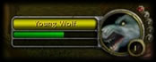 разбойника несколько завершающих ударов, позволяющих нанести дополнительные повреждения (Eviscerate), увеличить скорость атаки (Slice and Dice), уменьшить защиту противника (Expose Armor), повесить ДоТ (Rupture) и оглушить противника (Kidney Shot). Самыми полезными из них, пожалуй, являются Eviscerate, Kidney Shot и Expose Armor.
Используйте навык Evasion или способность Ghostly Strike, чтобы увеличить шанс увернуться от атаки противника, это поможет вам в сложном бою.
Если вы готовитесь драться с магом, используйте действующий на разум яд (Mind-numbing Poison), это ослабит врага. В бою с магами активно пинайте (Kick) своих противников. Это прерывает чтение ими заклинания, а также не дает им кастовать заклинания из этой школы в течение 5 секунд. Также не забывайте, что заклинания, бьющие по площади (AoE), позволяют кастеру заметить вас.
Если бой разворачивается не в вашу пользу, вы можете убежать (Sprint) или исчезнуть (Vanish). Также Vanish можно использовать, чтобы «начать все сначала», то есть, перейти в состояние скрытности. Помните, что применение Vanish снимает с вас замедляющие и приковывающие эффекты (Slow & Root Effects), однако требует реагента.
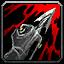В сражениях с монстрами вы можете позволить себе использовать ДоТ-способности, такие как перелом (Rupture) или гарроту (Garrote), однако в сражениях с другими игроками их лучше не использовать, так как на счету каждая секунда.
При сражениях в группе отвлекайте монстров, напавших на кастеров, если танкующие классы отвлеклись. Когда они поспешат вам на помощь, используйте финт (Feint), чтобы «передать» им атакующих вас монстров.
Профессии и вторичные навыки
В качестве профессий разбойник может выбрать любые понравившиеся, но наиболее полезными могут оказаться следующие комбинации:
Начальные параметры
| Люди | Дварфы | Ночные эльфы | Гномы | Орки | Нежить | Тролли | |
| Сила | 21 | 22 | 20 | 20 | 22 | 20 | 21 |
| Ловкость | 24 | 22 | 25 | 25 | 23 | 22 | 23 |
| Выносливость | 22 | 23 | 21 | 21 | 22 | 23 | 22 |
| Интеллект | 21 | 20 | 23 | 22 | 20 | 21 | 20 |
| Дух | 22 | 23 | 21 | 22 | 23 | 24 | 24 |